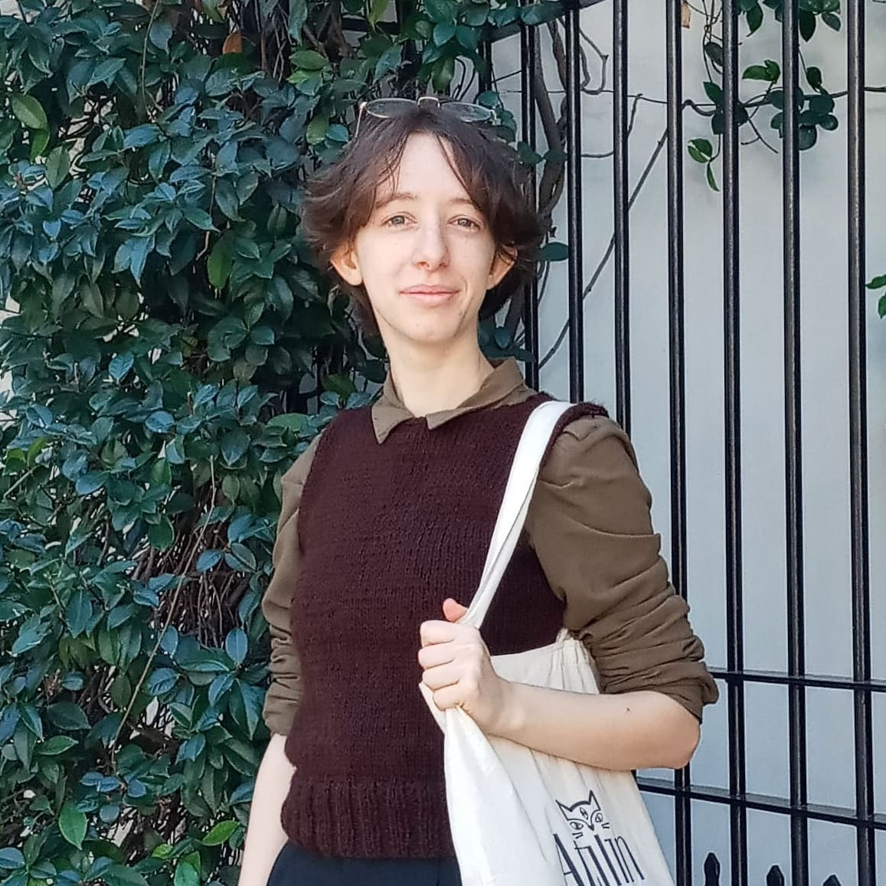

Portfolio Web Desarrollo de una aplicación web de arquitectura distribuída. Front End utilizando HTML, CSS, JavaScript y Angular. Back End utilizando Java EE y Spring Boot. Creación de base de datos.
Argentina Programa - #YoProgramo


LOGIN
Camila Rocío López FullStack Developer Junior Buenos Aires, Argentina
ACERCA DE
Estudiante de Letras y de Teatro. Empleada administrativa en Grendelia Libros y en el Centro Cultural Aljibe. Me considero una persona organizada, que respeta la puntualidad, capaz de escuchar y también de aportar mi impronta en aquello que se requiera